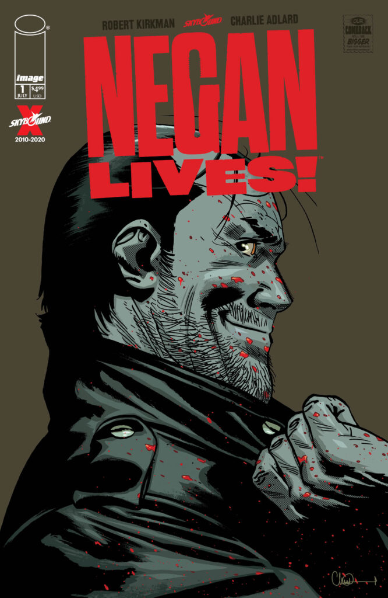

Negan, interpretado por Jeffrey Dean Morgan, é um dos antagonistas mais icônicos de The Walking Dead. Ele é introduzido no final da sexta temporada e rapidamente se estabelece como o líder brutal dos Salvadores, um grupo que domina outras comunidades através da força e intimidação. Negan é conhecido por seu senso de humor sádico, carisma assustador, e por sua arma icônica, Lucille, um bastão de beisebol envolto em arame farpado. Sua entrada na série é marcada por um dos momentos mais chocantes: a morte de Glenn e Abraham, que ele executa de maneira brutal. Ao longo da série, Negan passa de vilão cruel a um personagem mais complexo, explorando sua redenção e luta interna enquanto se adapta a um novo mundo onde a violência não é mais necessária para sobreviver.
Na HQ de The Walking Dead, Negan é introduzido de maneira semelhante como o líder dos Salvadores. Sua introdução também é marcada pela morte de Glenn, que ocorre da mesma forma brutal. O personagem mantém sua personalidade carismática e cruel, mas a HQ explora mais profundamente suas origens e motivações. Eventualmente, Negan também passa por uma trajetória de redenção, onde ele se afasta de seu passado violento e tenta contribuir positivamente para a comunidade, especialmente após o fim da guerra contra os Salvadores.
Embora a essência de Negan permaneça semelhante entre a série e a HQ, há algumas diferenças notáveis, na HQ, Negan é exilado por Rick após a guerra contra os Salvadores, mas não é morto. Ele vive isolado, em uma forma de penitência. Na série, Negan é mantido preso por anos, mas eventualmente é libertado e começa a contribuir de maneira mais ativa com as comunidades, na série, a relação de Negan com personagens como Judith Grimes é explorada de maneira mais profunda, o que humaniza o personagem mais do que na HQ.
Negan é um dos personagens principais da série derivada The Walking Dead: Dead City, lançada em 2023. A série segue Negan e Maggie em uma missão em Manhattan, uma cidade devastada e cheia de perigos, a série além de um roteiro péssimo, e uma direção amadora a história vai te arrancar gargalhadas por escolhas de roteiro péssimas. Atualmente você pode assistir essa série na Prime Video(mesmo eu não recomendando). Nota do IMDb.